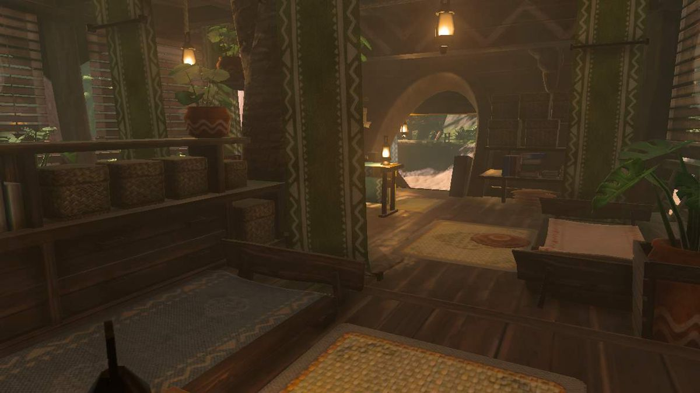
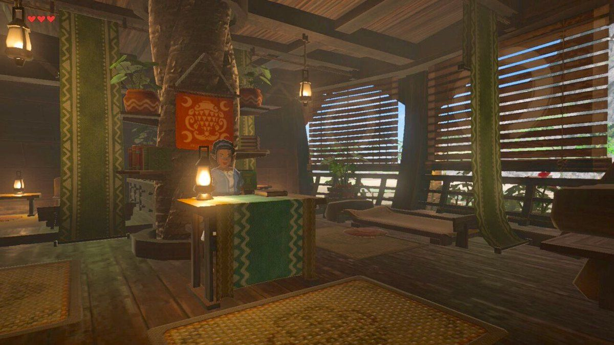

With the purchse of 900 rupees, you can enjoy a regular Lurelin handcrafted bed for for your nightly stays, equipped with the most high quality pillows.

With a purchase of a fluffy bed, it also comes with a calming salt srub massage. Using the Lureline seawater mixed with rock salt, it'll relax you like nothing else! Patrons say that their skin is left feeling more soft than it was before. Massages are performed by our wonderful Chessica. Please bring your own rock salt.